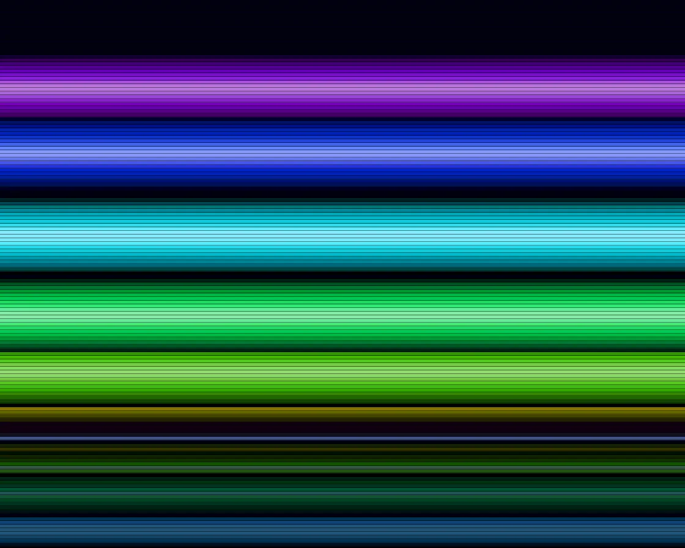

Copper bars
Copper bars is a WebGL effect: per-scanline colour ramps on a rolling drum, in 12-bit colour. One plain JavaScript file with no dependencies; add it with npx motion-library add copper-bars.

Open it live, tune it and copy the code
What is Copper bars?
Glossy horizontal bars roll over and under each other above a rippling reflection, banded like an Amiga.
How does Copper bars work?
Each bar rides a circle in height and depth, and every raster line shows the front-most bar covering it; colours snap to 16 levels per channel.
How do I add Copper bars to my website?
- In your project folder, run
npx motion-library add copper-bars. It writesanimations/copper-bars.js. Needs Node 18 or newer. - Import it and call it with a container element that has a size:
import fx from './animations/copper-bars.js'; const stop = fx(document.querySelector('#hero')); - Call
stop()to clean up, for example when a component unmounts.
Every setting below is also a flag, so you can install it already tuned: npx motion-library add copper-bars --bars 16.
What settings can I tweak?
| Setting | Flag | Default | Range | Step |
|---|---|---|---|---|
| Bars | --bars | 7 | 2 to 16 | 1 |
| Speed | --speed | 1 | 0 to 3 | 0.05 |
| Thickness | --thickness | 1 | 0.4 to 2 | 0.05 |
Specifications
- Renderer
- WebGL
- Category
- Retro & signal
- Dependencies
- None
- File size
- 4.7 KB, unminified
- Interactive
- No: it plays on its own
- Reduced motion
- Respects prefers-reduced-motion
- Licence
- MIT-0: use it anywhere, no credit needed
Source code
// Copper bars, the Amiga way: the copper chip changed the background colour on every scanline, so bars were
// just per-line colour ramps. Here each bar rides a circle in (y, depth): its height on screen is the sine, its
// depth the cosine, and every raster line shows the front-most bar that covers it, so bars pass behind each other.
// Lines are 3 px tall and colours are snapped to the Amiga’s 12-bit palette (16 levels per channel), the banding
// that gave copper bars their look.
const PARAMS = { bars: 7, speed: 1, thickness: 1 };
export default function (stage) {
const reduce = matchMedia('(prefers-reduced-motion: reduce)').matches;
const canvas = document.createElement('canvas');
canvas.style.cssText = 'position:absolute;inset:0;width:100%;height:100%;display:block';
stage.append(canvas);
const gl = canvas.getContext('webgl2', { antialias: false });
if (!gl) { stage.textContent = 'This needs WebGL2.'; return () => canvas.remove(); }
const vs = `#version 300 es
in vec2 p; void main() { gl_Position = vec4(p, 0, 1); }`;
const fs = `#version 300 es
precision highp float; out vec4 o;
uniform vec2 R; uniform float T, N, TH, DP;
vec3 hue(float h) { return clamp(abs(mod(h * 6. + vec3(0, 4, 2), 6.) - 3.) - 1., 0., 1.); }
void main() {
float pitch = 3. * DP; // one raster line = 3 css px
float line = floor((R.y - gl_FragCoord.y) / pitch);
float y = (line + .5) * pitch / R.y; // 0 at the top
float sub = fract((R.y - gl_FragCoord.y) / pitch);
// below the horizon the raster shows the bars again, squashed and rippling: a copper "water" mirror
float hz = .8, refl = step(hz, y);
float yy = refl > .5 ? hz - (y - hz) * 2.2 + .012 * sin(line * .9 + T * 5.) : y;
vec3 col = mix(vec3(.0, .015, .07), vec3(.06, .0, .09), yy) * (.75 + .25 * sin(yy * 50. + T * .6));
float best = -9.;
for (int i = 0; i < 16; i++) {
if (float(i) >= N) break;
float fi = float(i);
float th = T * 1.25 - fi * 3.4 / N; // a chain of bars, rolling round a drum
float z = cos(th);
float cy = .4 + sin(th) * (.27 + .05 * sin(T * .63 + fi * .2));
float hw = .052 * TH * (1. + .32 * z); // nearer bars are fatter
float d = (yy - cy) / hw;
if (abs(d) < 1. && z > best) {
best = z;
float s = 1. - d * d; // the bar’s cross-section: lit in the middle
vec3 c = hue(fract(fi / N * .85 + T * .02));
c = mix(c * pow(s, .8), vec3(1), pow(s, 12.) * .55); // a thin hot centre line
col = c * (.42 + .58 * (z * .5 + .5)); // farther bars are dimmer
}
}
if (refl > .5) col *= vec3(.38, .45, .62) * (1. - (y - hz) * 1.6);
col += vec3(.5, .7, 1.) * .5 * smoothstep(pitch * 1.2 / R.y, 0., abs(y - hz));
col = floor(col * 15. + .5) / 15.; // 4 bits per channel
col *= sub > .67 ? .72 : 1.; // a darker gap between raster lines
o = vec4(col, 1);
}`;
const sh = (t, s) => { const x = gl.createShader(t); gl.shaderSource(x, s); gl.compileShader(x); if (!gl.getShaderParameter(x, gl.COMPILE_STATUS)) throw new Error(gl.getShaderInfoLog(x)); return x; };
const prog = gl.createProgram(); gl.attachShader(prog, sh(gl.VERTEX_SHADER, vs)); gl.attachShader(prog, sh(gl.FRAGMENT_SHADER, fs)); gl.bindAttribLocation(prog, 0, 'p'); gl.linkProgram(prog); gl.useProgram(prog);
gl.bindBuffer(gl.ARRAY_BUFFER, gl.createBuffer()); gl.bufferData(gl.ARRAY_BUFFER, new Float32Array([-1, -1, 3, -1, -1, 3]), gl.STATIC_DRAW);
gl.enableVertexAttribArray(0); gl.vertexAttribPointer(0, 2, gl.FLOAT, false, 0, 0);
const U = {}; ['R', 'T', 'N', 'TH', 'DP'].forEach(n => U[n] = gl.getUniformLocation(prog, n));
let dpr = 1;
const resize = () => { dpr = Math.min(devicePixelRatio, 2); canvas.width = (stage.clientWidth || 1) * dpr | 0; canvas.height = (stage.clientHeight || 1) * dpr | 0; gl.viewport(0, 0, canvas.width, canvas.height); };
const ro = new ResizeObserver(resize); ro.observe(stage); resize();
let raf, last = performance.now(), t = 0;
function frame(now) {
t += Math.min(0.05, (now - last) / 1000) * PARAMS.speed * (reduce ? 0.08 : 1); last = now;
gl.uniform2f(U.R, canvas.width, canvas.height); gl.uniform1f(U.T, t); gl.uniform1f(U.N, Math.round(PARAMS.bars)); gl.uniform1f(U.TH, PARAMS.thickness); gl.uniform1f(U.DP, dpr);
gl.drawArrays(gl.TRIANGLES, 0, 3);
raf = requestAnimationFrame(frame);
}
raf = requestAnimationFrame(frame);
return () => { cancelAnimationFrame(raf); ro.disconnect(); gl.getExtension('WEBGL_lose_context')?.loseContext(); canvas.remove(); };
}